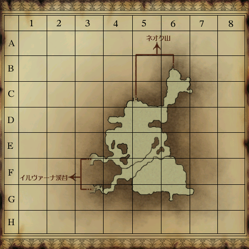

一覧採掘ガイド：ネオク高原(War_Age)
ネオク高原(War_Age) の掘り場 3 か所（岩 39 個）。
掘り場の地図

#1#2#3緑の点が岩、#番号が掘り場（岩 3 個以上）。点にマウスを合わせると岩の名前。
掘り場
地図の緑の点が岩、赤がプレイヤーを襲うモンスター、灰色が襲わないモンスターの出る位置。
#1（岩 16 個）
- 岩の数
- 16 個
- 広さ
- 112 m
- 間隔
- 11 m
- 再出現
- 60 秒〜15 分
- 岩の Lv
- 21〜99
- 出かた
- 時間帯や条件で出る岩をふくむ
出るもの
| アイテム | 1 周 | 1 時間に湧く量 |
|---|---|---|
| 鉄鉱石 | 15.74 | 944.4 |
| 黒炭 | 14.98 | 898.8 |
| 鉄鉱石の破片 | 4.72 | 283.2 |
| オリハルコン鉱石の破片 | 3.15 | 12.6 |
| 木炭 | 2.4 | 144 |
| スズ | 2.16 | 129.6 |
| 銅鉱石 | 1.68 | 100.8 |
| 銀鉱石の破片 | 0.8 | 48 |
| オリハルコン鉱石 | 0.45 | 1.8 |
| エメラルド | 0.02 | 1.2 |
| アクアマリン | 0.02 | 1.2 |
| ルビー | 0.02 | 1.2 |
| サファイア | 0.02 | 1.2 |
| ブラック パール | 0.01 | 0.5 |
| ムーンストーン | 0.01 | 0.5 |
岩
| 出る岩（出るたびに抽選） | 数 |
|---|---|
| 炭の岩石 Lv 21〜22（60%）／鉄の岩石（銅鉱石） Lv 24〜26（20%）／鉄の岩石（鉄鉱石の破片） Lv 27〜29（20%） | 6 |
| 炭の岩石 Lv 31〜32（60%）／銀の鉱石 Lv 34〜35（20%）／鉄の岩石 Lv 37〜39（20%） | 4 |
| 鉄の岩石 Lv 30〜31（70%）／カーボンの鉱石 Lv 40〜41（30%） | 3 |
| オリハルコンの岩石（オリハルコン鉱石の破片） Lv 95〜96（85%）／オリハルコンの岩石（オリハルコン鉱石） Lv 98〜99（15%） | 3 |
近くのモンスター
届くモンスターはいない。
#2（岩 12 個）
- 岩の数
- 12 個
- 広さ
- 61 m
- 間隔
- 7 m
- 再出現
- 60 秒〜15 分
- 岩の Lv
- 21〜99
- 出かた
- 時間帯や条件で出る岩をふくむ
出るもの
| アイテム | 1 周 | 1 時間に湧く量 |
|---|---|---|
| 鉄鉱石 | 14.48 | 868.8 |
| 黒炭 | 11.44 | 686.4 |
| 鉄鉱石の破片 | 3.2 | 192 |
| 木炭 | 1.68 | 100.8 |
| スズ | 1.44 | 86.4 |
| 銅鉱石 | 1.12 | 67.2 |
| オリハルコン鉱石の破片 | 1.05 | 4.2 |
| 銀鉱石の破片 | 0.6 | 36 |
| オリハルコン鉱石 | 0.15 | 0.6 |
| エメラルド | 0.01 | 0.8 |
| アクアマリン | 0.01 | 0.8 |
| ルビー | 0.01 | 0.8 |
| サファイア | 0.01 | 0.8 |
| ブラック パール | 0.01 | 0.4 |
| ムーンストーン | 0.01 | 0.4 |
岩
| 出る岩（出るたびに抽選） | 数 |
|---|---|
| 鉄の岩石 Lv 30〜31（70%）／カーボンの鉱石 Lv 40〜41（30%） | 4 |
| 炭の岩石 Lv 21〜22（60%）／鉄の岩石（銅鉱石） Lv 24〜26（20%）／鉄の岩石（鉄鉱石の破片） Lv 27〜29（20%） | 4 |
| 炭の岩石 Lv 31〜32（60%）／銀の鉱石 Lv 34〜35（20%）／鉄の岩石 Lv 37〜39（20%） | 3 |
| オリハルコンの岩石（オリハルコン鉱石の破片） Lv 95〜96（85%）／オリハルコンの岩石（オリハルコン鉱石） Lv 98〜99（15%） | 1 |
近くのモンスター
届くモンスターはいない。
#3（岩 11 個）
- 岩の数
- 11 個
- 広さ
- 52 m
- 間隔
- 6 m
- 再出現
- 60 秒〜15 分
- 岩の Lv
- 21〜99
- 出かた
- 時間帯や条件で出る岩をふくむ
出るもの
| アイテム | 1 周 | 1 時間に湧く量 |
|---|---|---|
| 鉄鉱石 | 9.32 | 559.2 |
| 黒炭 | 8.28 | 496.8 |
| オリハルコン鉱石の破片 | 3.15 | 12.6 |
| 鉄鉱石の破片 | 3.04 | 182.4 |
| 木炭 | 1.44 | 86.4 |
| スズ | 1.44 | 86.4 |
| 銅鉱石 | 1.12 | 67.2 |
| オリハルコン鉱石 | 0.45 | 1.8 |
| 銀鉱石の破片 | 0.4 | 24 |
| エメラルド | 0.01 | 0.7 |
| アクアマリン | 0.01 | 0.7 |
| ルビー | 0.01 | 0.7 |
| サファイア | 0.01 | 0.7 |
岩
| 出る岩（出るたびに抽選） | 数 |
|---|---|
| 炭の岩石 Lv 21〜22（60%）／鉄の岩石（銅鉱石） Lv 24〜26（20%）／鉄の岩石（鉄鉱石の破片） Lv 27〜29（20%） | 4 |
| オリハルコンの岩石（オリハルコン鉱石の破片） Lv 95〜96（85%）／オリハルコンの岩石（オリハルコン鉱石） Lv 98〜99（15%） | 3 |
| 炭の岩石 Lv 31〜32（60%）／銀の鉱石 Lv 34〜35（20%）／鉄の岩石 Lv 37〜39（20%） | 2 |
| 鉄の岩石 Lv 30〜31（70%）／カーボンの鉱石 Lv 40〜41（30%） | 2 |
近くのモンスター
届くモンスターはいない。